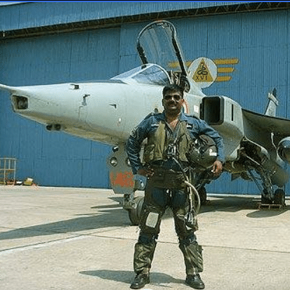
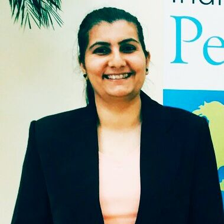
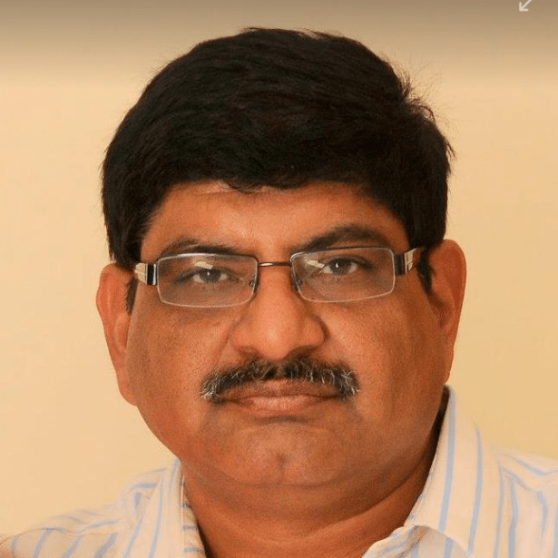
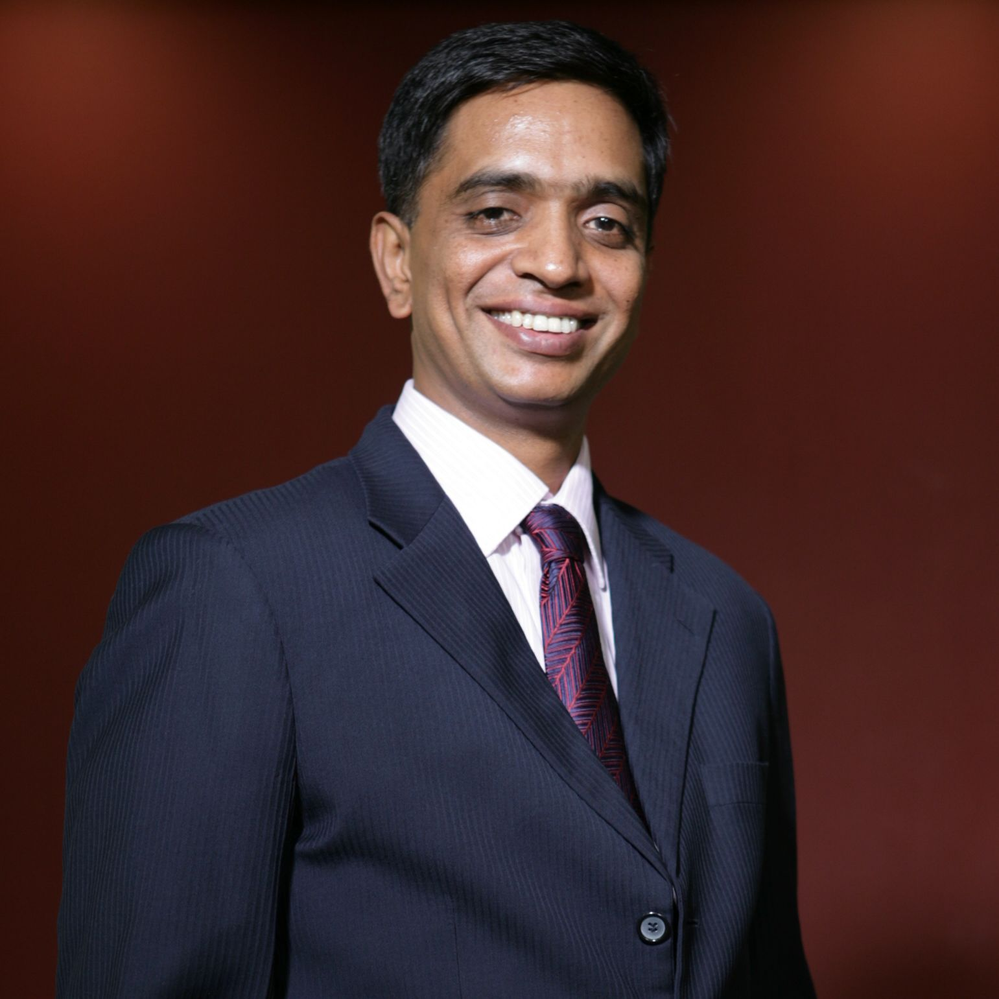
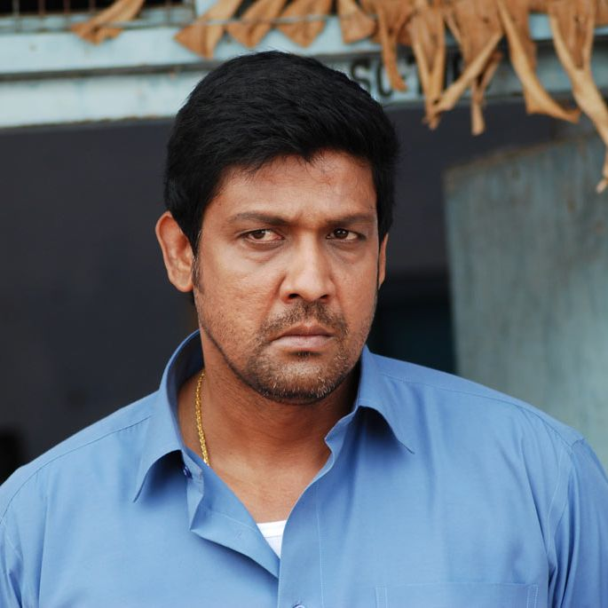
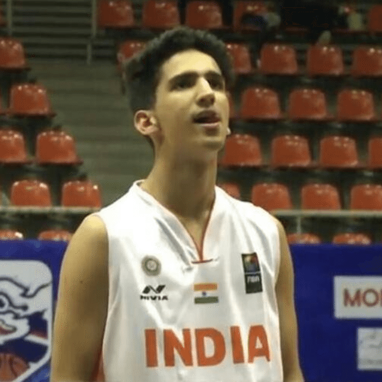
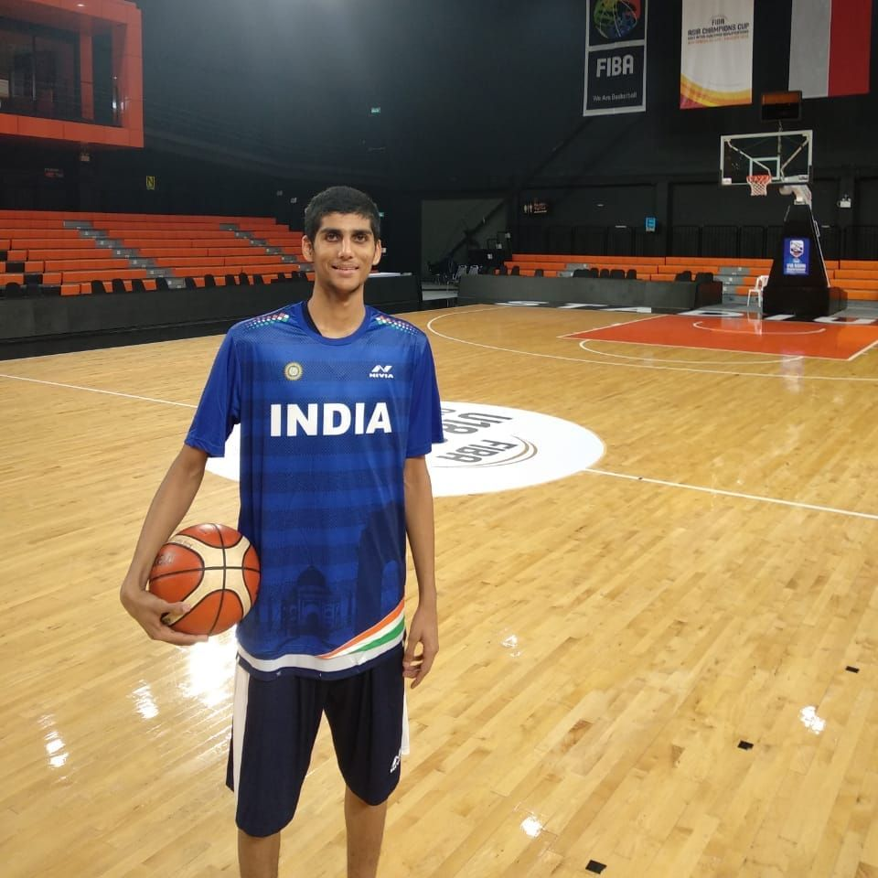

Air marshal P. Kanakaraj (Retd.)
Air marshal P. Kanakaraj (Retd.) VSM, AVSM, PVSM, Commander-in-Chief, maintenance command, Indian Air Force.
- 1972 batch of kvh
- was conferred the distinguished alumnus award for “excellence in public administration” at the National Institute of Technology, Tiruchi (NIT-T) in March 2014.
The marshal had passed out as a mechanical engineering student from REC (Regional Engineering College) (NIT was then known as REC)
in 1977, went on to pursue post graduation in IIT Madras, and then joined the Indian Air Force.
- Chief patron of KVHAA.
- 39 years of distinguished career in the Indian Air Force.
- Commanded the only Unified Command of Indian Armed Forces at Andaman and Nicobar Islands
- As the Commandant of National Defence College of India conducted year long courses on
National Security and Strategy for senior Indian Defence and Civil Services officers as well as defence officers from friendly foreign countries
Diplomatic experience of three years as the Military and Air Attaché at the Indian Embassy,
Ukraine and Romania.
Presently hold the Admiral RD Katari Chair of Excellence at United Service Institute of India, N Delhi for research on Strategic Vision - 2030 for Security and Development of Andaman and Nicobar Islands.
Rear Admiral Sudhir Pillai
Rear Admiral Sudhir Pillai joined the National Defence Academy, Khadakwasla, Pune after finishing Class XI from this very school in1976.
Commissioned into the Indian Navy in 1980, he specialised as a Naval Aviator and has flown over 3000 hours including from Aircraft Carriers and other shipborne flights.
He has been the Commanding Officer of five ships and that of the Naval Air Station at Kochi.
As an Admiral his assignments include tenures as Flag Officer Naval Aviation and Chief Instructor (Navy) at the Defence Services Staff College.
He is a graduate of the National Defence College and holds an M.Phil in Defence and Strategic Studies.
Rear Admiral Sudhir Pillai was awarded Nao Sena Medal (Gallantry) for acts of exceptional courage during an expedition to the Weddell Sea in Western Antarctica.

Gp capt C Subramaniam
Gp capt C Subramaniam, 1986 batch, Defence / HAL,
Fighter pilot and Experimental Test Pilot.
Involved in number of indegenous aircraft and equipment test flying.
Noteably did the first flight of indigenous HAL made HTT 40 aircraft.

Major Meenakshi
Major Meenakshi
1994 batch - KVH
Commerce graduate, Crime reporter with Times of India
PRO with Spice Telecom
Visiting faculty for Various Vidya Bhawan Mass Communication
Doctorate in Mass communication and human rights
Went for two United Nations Missions
Got commissioned in 2003 in Military Intelligence
Have been awarded Chiefs Commendation for integration of IITs
Freelance pyshcological counsellor and trainer for women Safety and security.
Adventure sports like Deep sea diving.. River rafting.. Bingi jumping.. Para jumping.

Sandeep Bhatia
Category: Innovation
Organization: Broadcom Ltd
Achievement: Over 30 US Patents granted for the work done in the area of Video and Audio
processing for Set top boxes.
Ashfaq Ahmed
Ashfaq Ahmed : 1975 batch, President of KVHAA.
40 years of service with the Karnataka Government.
Retired as Regional Transport Office and is the currently the president of RTO’s association in India.
Has been a major source of help in association activities since its inception.

Ganesh Guruswamy
Ganesh Guruswamy - Senior VP at Western Digital
Guruswamy has over 25 years of experience in the semiconductor industry.
Prior to SanDisk, he served as vice president and India country manager at Freescale Semiconductor, and in senior management and engineering roles at Motorola, Advanced Micro Devices, and the Indian Space Research Organisation.
Guruswamy has served on the executive council of the Indian Semiconductor Association and
has been featured in multiple publications.
He earned a Master of Science degree in electrical engineering from the University of Idaho in the United States, and a Bachelor of Engineering degree in electronics from Bangalore University.

Sampath Raj
Sampath Raj is an Indian film actor who works primarily in the Tamil, Telugu, kannada and Malayalam films.
He is quite popular in Tamil & Telugu film industries.
He is best known for appearing in each film of director Venkat Prabhu's comedy trilogy, consisting of Chennai 600028, Saroja and Goa.
He has also acted in the latest film starring Rajnikanth "Kaala".

Prashant Tomar
Prashant Tomar: 2017 batch
Represented Karnataka state team under 13 in 2014 held at nashik
Represented Karnataka state team under 16 in 2016 held at hassan
Represented Karnataka state team under 16 in 2017 held at Hyderabad
Represented Karnataka state team under 18 in 2018 held at Ludhiana
Represented Indian basketball under 18 team in 3x3 FIBA championship held at Malaysia in 2017
Represented Indian basketball team under 16 in South Asian championship in 2017 held at Nepal
Represented Indian basketball team under 16 in FIBA Asian championship in 2017 held at China
Represented Indian basketball team under 18 in South Asian championship in 2018 held at Bangladesh

Pratyanshu Tomar
Pratyanshu Tomar 2016 Batch
Year 2012- Participated in U-14, 43 rd KVS National Sports Meet(Lucknow Region)
Year 2014- Participated in U-19 45th KVS National Sports meet (Delhi & Gurgaon Region)
Year 2015- Participated in U-19 46th KVS National Sports meet (Varanasi Region)
Year 2015- Represented Karnataka in 32 nd National Youth Basketball Championship at Bhavnagar,Gujarat
Year 2016- Selected for Reliance Foundation Jr NBA National Elite Camp (Conducted at Jaypee Greens Sports Complex,Greater Noida by NBA,India)
Year 2016- Represented Karnataka in 33 nd National Youth Basketball Championship at Hassan,Karnataka
Year 2017- Won Basketball Junior (U-18) State Championship and participated as a captain for Junior (U-18) National Basketball Championship- 2017 (Noida-UP)
Year 2018- Participated in 69 th National Junior(U-18) Basketball Championship being held at Ludhiana Punjab
Year 2018- Represented India and Won in U-18 SABA championship held in Dhaka , Bangladesh.
Year 2018- Going to represent India in U-18 FIBA Aisa championship 2018 to be held in Thailand in August
Year 2018- Identified as the Khelo India talent by Sports Authority of India